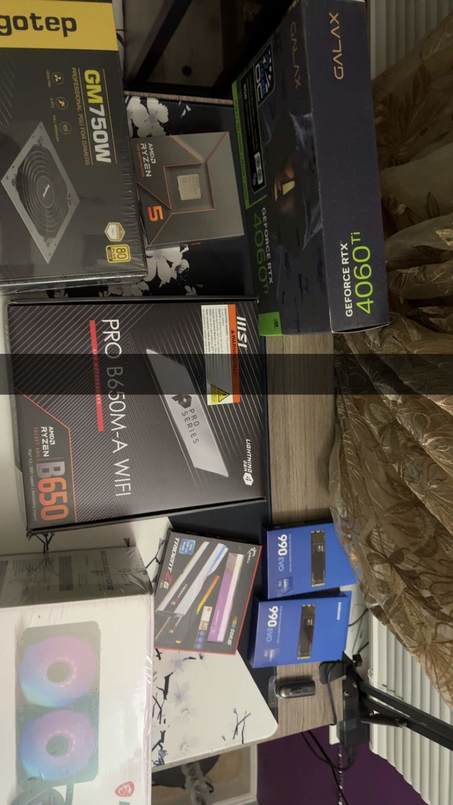

Introduction
Building a PC has always been a dream of mine. After months of research, planning, and saving, I finally took the leap and assembled my very own computer. This blog chronicles my journey, from selecting parts to overcoming challenges during assembly.
Parts Selection
One of the most critical steps in building a PC is selecting the right components. Here's what I chose:
- Processor (CPU): AMD Ryzen 5 7600X
- Graphics Card (GPU): NVIDIA GeForce RTX 4060 Ti
- Motherboard: MSI PRO B650M-A WiFi ProSeries Motherboard
- Memory (RAM): G.SKILL Trident Z5 RGB Series (2 x 16GB) DDR5-6400
- Storage: SAMSUNG 990 EVO SSD 1TB (x2)
- Power Supply (PSU): Segotep 750W Power Supply, 80 Plus Gold
- Case: MUSETEX PC CASE ATX 3

Each part was chosen based on a balance of performance, budget, and compatibility.
The Assembly Process
The assembly process was both exciting and daunting. Here are the steps I followed:
- Preparing the workspace and gathering tools.
- Installing the CPU, cooler, and RAM on the motherboard.
- Mounting the motherboard inside the case.
- Installing the power supply and routing cables.
- Adding storage and the graphics card.
- Double-checking connections and powering up for the first time.
While most of the process went smoothly, I did encounter challenges, like routing cables neatly and ensuring all components fit correctly in the case.
Lessons Learned
Here are some key takeaways from my PC-building journey:
- Always double-check part compatibility, especially with the motherboard and case.
- Invest in good cable management tools to keep your build clean and efficient.
- Patience is key. Take your time to avoid mistakes.
- Don't be afraid to ask for help or consult online guides and forums.
Building a PC is a rewarding experience that combines creativity, problem-solving, and technical skills. I'm proud of the machine I built and look forward to upgrading it in the future.